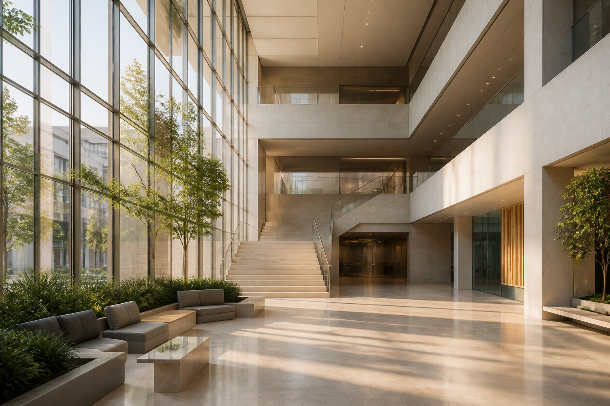

Academic English Foundation
Reading, writing, and presentation fluency — the base for every international route.

Omareyah International
An international division designed with world-class clarity — not a copy of the national track, but a confident route for learners who see the world ahead.
Students should feel they belong to a global institution — with a visual and operational identity of its own.
Structured programmes around learner readiness — clear language, measurable follow-through, no inflated promises.
Reading, writing, and presentation fluency — the base for every international route.
Organised preparation for programmes such as IGCSE, A Level, and SAT according to readiness.
Analysis, projects, and confident communication — skills that travel across borders.
From pathway choice to application files — calm, realistic counselling.
The International Division is not a sub-page of the national site. It has its own presence — while fully respecting Jordan’s national curriculum track.
Ink, champagne, and sage. A simple horizon mark. A digital experience worthy of a global pathway.
The familiar Omareyah Schools presence for families on the Jordanian national curriculum and Tawjihi pathway.
Branch expansion is not a Year-One goal. First: a strong mother model the board can replicate with confidence.
Clear identity, operational quality, and measurable family experience.
Strengthen programmes, complete visual/operational separation, study sites with board gates.
After quality is proven: a carefully planned first branch, then evaluate a second.
This site presents the proposed International Division. Share your interest and we will follow with clear next steps at operational launch.